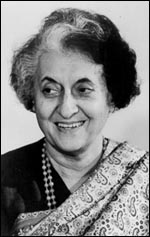

January 14, 1980 - October 31, 1984 | Congress (I)
 Born on November 19, 1917 in an illustrious family,
Smt. Indira Gandhi was the daughter of Pt. Jawaharlal Nehru.
She studied at prime institutions like Ecole Nouvelle,
Bex (Switzerland), Ecole Internationale, Geneva, Pupils’
Own School, Poona and Bombay, Badminton School, Bristol,
Vishwa Bharati, Shantiniketan and Somerville College, Oxford.
She was conferred Honorary doctoral degree by a host of
Universities globally.
With an impressive academic background
she also got the Citation of Distinction from the Columbia
University.
Smt. Indira Gandhi was actively involved in the freedom struggle. In her childhood, she founded the ‘Bal Charkha Sangh’ and in 1930, the ‘Vanar Sena’ of children to help the Congress party during the Non-Cooperation Movement. She was imprisoned in September 1942, and worked in riot-affected areas of Delhi in 1947 under Gandhi’s guidance. She got married to Feroze Gandhi on March 26, 1942 and had two sons. Smt. Gandhi became a Member, Congress Working Committee and Central Election of the party in 1955.